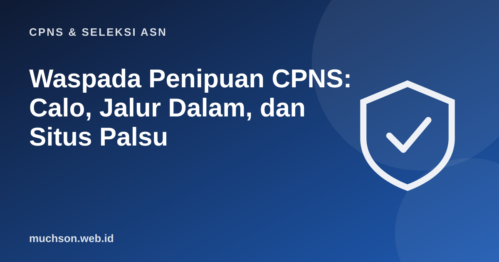

Beranda › Artikel › CPNS & Seleksi ASN
CPNS & Seleksi ASNWaspada Penipuan CPNS: Calo, Jalur Dalam, dan Situs Palsu
Setiap kali pendaftaran CPNS mendekat, penipu ikut bergerak. Akun SSCASN CPNS 2026 baru dibuka 14 November 2026, jadi inilah masa paling rawan. Artikel ini menjelaskan modus yang pernah diperingatkan BKN, apa yang dikatakan aturan resmi, dan cara memeriksa setiap tawaran sebelum Anda membayar atau membagikan data.

Kenapa penipuan CPNS selalu muncul menjelang pendaftaran
Penipu memanfaatkan tiga hal: banyaknya peminat, tekanan waktu pendaftaran, dan kurang jelasnya sumber informasi. Pada 2019, Biro Humas BKN sudah mengingatkan bahwa modus penipuan banyak bermunculan jelang penerimaan CPNS, termasuk surat keputusan (SK) palsu dan simulasi soal yang mengatasnamakan BKN. Polanya tidak berubah sampai kini.
Status 17 November 2026: pembuatan akun SSCASN dibuka sejak 14 November, tetapi jadwal pendaftaran formasi belum diumumkan resmi. Siapa pun yang menjanjikan "kursi" atau "jalur" sekarang berbohong, karena formasi dan jadwal resmi belum ada.
Modus yang paling sering
Deskripsi teks diagram
Ciri penipuan
- Meminta uang atau "uang muka"
- Menjanjikan kelulusan atau formasi tertentu
- Link tidak berakhiran go.id
- Memburu-buru dengan batas waktu mendadak
- Mengirim pesan pribadi atau grup tertutup
Ciri informasi resmi
- Diumumkan di sscasn.bkn.go.id atau situs instansi go.id
- Mengacu pada nomor peraturan atau pengumuman
- Tidak pernah meminta imbalan untuk lulus
- Hasil seleksi tampil di SSCASN
- Sama di semua kanal resmi
Apa kata aturan resmi
PermenPANRB 6/2024 menutup celah yang dipakai penipu. Beberapa pasal yang berguna untuk argumen saat ada yang menjanjikan jalur pintas:
| Klaim penipu | Ketentuan resmi | Dasar |
|---|---|---|
| "Bisa dimasukkan lewat orang dalam" | Pelamar yang melakukan atau membantu kecurangan dinyatakan gugur dan tidak boleh melamar penerimaan ASN | Pasal 50 ayat 2 |
| "Nilai bisa diatur" | Instansi dan BKN wajib memastikan hasil SKD yang diumumkan sama dengan hasil akhir yang tampil di layar monitor saat SKD | Pasal 31 ayat 4 |
| "Daftar lewat saya, lebih cepat" | Pelamaran dilakukan secara daring melalui SSCASN | Pasal 25 ayat 1 |
| "Daftar di banyak instansi biar aman" | Melamar lebih dari satu instansi atau jabatan membuat pelamar dianggap gugur | Pasal 25 ayat 5 |
| "Pasti lolos SKB" | Peserta SKB dibatasi paling banyak 3 kali kebutuhan jabatan berdasarkan peringkat tertinggi | Pasal 31 ayat 5 |
Orang yang membayar untuk jalur khusus tidak hanya kehilangan uang. Bila terbukti membantu atau melakukan kecurangan, ia dinyatakan gugur dan tidak boleh melamar penerimaan ASN (Pasal 50 ayat 2). Korban dan pelaku sama-sama menanggung risiko.
Cara memeriksa setiap kabar CPNS
Deskripsi teks diagram
- Cek domain: harus go.id, ketik sendiri alamatnya
- Cek kanal resmi: sscasn.bkn.go.id dan akun resmi BKN
- Cek dasar aturan: nomor peraturan atau pengumuman
- Jangan bayar, jangan kirim kode: laporkan bila diminta
Jika sudah terlanjur
- Berhenti berkomunikasi dan simpan bukti: tangkapan layar, bukti transfer, nomor rekening, dan nomor telepon pelaku.
- Ganti kata sandi akun SSCASN dan email jika data akun sempat dibagikan.
- Laporkan ke kepolisian setempat, dan sampaikan juga ke kanal pengaduan resmi pada situs BKN atau instansi yang bersangkutan.
- Beri tahu pelamar lain agar tidak jadi korban berikutnya.
Belajar dengan cara yang sah
Yang bisa Anda kendalikan adalah kesiapan. SKD dapat dipelajari dengan latihan terstruktur: pelajari materi TWK, TIU, TKP, uji dengan simulasi bertimer, lalu perbaiki bab yang lemah. Soal latihan yang sah ditulis oleh penyedia sendiri dan tidak mengklaim sebagai soal asli.
LolosSeleksi menyediakan paket tryout SKD pertama secara gratis dan latihan per bab. Soalnya disusun sendiri, bukan bocoran, dan situs ini menegaskan bukan bagian dari BKN atau KemenPANRB. Untuk simulasi resmi dari pemerintah, gunakan juga simulasi di situs CAT BKN.
Tanya jawab
Apakah ada jalur dalam atau calo yang sah untuk lolos CPNS?
Di mana pendaftaran CPNS yang resmi?
Apakah simulasi CAT resmi dari BKN berbayar?
Apakah soal bocoran SKD ada?
Apa yang harus dilakukan jika sudah transfer ke penipu?
Referensi
- Peraturan Menteri PANRB Nomor 6 Tahun 2024 tentang Pengadaan Pegawai ASN (teks resmi, BKN) (membuka tab baru)
- Setkab, 16 Oktober 2019: BKN mengingatkan modus penipuan jelang penerimaan CPNS, termasuk SK palsu dan simulasi soal palsu (membuka tab baru)
- MerahPutih: BKN, CPNS 2026 belum dibuka, waspada modus penipuan (membuka tab baru)
- FAHUM UMSU: semua informasi CPNS 2026 hanya melalui sscasn.bkn.go.id (memuat contoh domain tiruan) (membuka tab baru)
- Kompas.com, 16 November 2026: registrasi akun SSCASN CPNS 2026 dibuka, jadwal pendaftaran belum diumumkan (membuka tab baru)